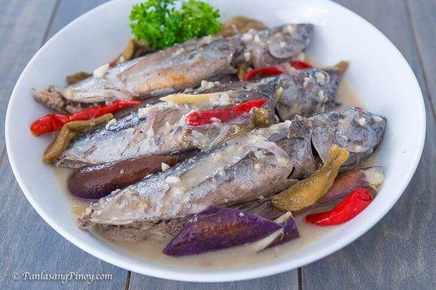

Ginataang Tulingan

Ginataang Tulingan makes use of two of Philippines' best products.
This simple dish gives you a taste of the Philippine Islands.
Ingredients
- 4 pieces tulingan
- 2 cups coconut milk
- 10 pieces kamias
- 3 thumbs ginger
- 5 pieces Thai chili pepper
- 1 piece eggplant
- 1 piece onion
- 5 cloves garlic crushed and minced
- 3 tablespoons vegetable oil
- 1 teaspoon patis
- 1 3/4 cups water
- Salt and ground black pepper to taste
Steps
- Clean the fish thoroughly. Create a slit on both sides and rub salt all over. Let it stay for 10 to 15 minutes.
- Arrange vegetable oil, kamias, fish, and ginger. Pour water. Cover and let boil. Continue to cook in medium heat for 40 minutes.
- Pour coconut milk into the pot. Add garlic, onion, and chili. Cover and continue to boil for another 40 minutes using between low to medium heat.
- Add eggplant. Cook for 5 to 7 minutes. Season with patis and ground black pepper.
- Transfer to a serving plate and serve.